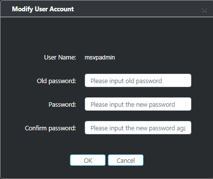

Viewing Performance Analysis Results
This topic uses the ResNet18 network as an example to describe how to view the performance analysis results.
After successful profiling, right-click the ImageClassificationPostProcess node and choose profiling result from the shortcut menu, as shown in Figure 1. The profiling main page is displayed. You are required to enter the user name and password to log in.
Figure 1 Choosing profiling result
NOTE:
- If you log in to the profiling main page for the first time, after you click profiling result, the address bar of the browser will be marked pop-up blocked
. Click
- You are not advised to open two Mind Studio tab pages on a browser and initiate profiling for the same project. Otherwise, the profiling function may be abnormal.
- The default account for logging in to the profiling main page is the administrator. The user name is msvpadmin and the initial password is Admin12#$. This administrator is able to view performance analysis results and create common users.
- To ensure your account security, you will be prompted to change the initial password upon your first login and update your password every 90 days. If incorrect passwords are entered three consecutive times, the login page will be locked for 10 minutes.
Perform the following steps to change your password:
On the result page, choose User Management from the user drop-down list box in the upper right corner, as shown in Figure 2.
Figure 2 Choosing User Management
- If the user name is msvpadmin, you can modify the information of all users in the dialog box that is displayed, as shown in Figure 3.
Figure 3 Modifying the information of all users
- If the user is a common user, change the password in the dialog box that is displayed, as shown in Figure 4.
Figure 4 Changing user password
- After logging in to the profiling main page using the msvpadmin account, you can perform the following operations:
- In the User Management dialog box, click add user to add a common user as prompted. If a user of user group is created, the user can view the analysis data of the user, edit his/her own analysis results, and view the analysis results of other users, but cannot edit the analysis results of other users. If a user of guest group is created, the user can only view the analysis results of other users and cannot import new analysis results.
- In the User Management dialog box, click edit to change the password as prompted.
- In the User Management dialog box, click delete to delete a common user as prompted.
- In the Show Log dialog box, view operation logs of all users.
The profiling main page is displayed in dimensions such as Summary, Timeline, AI CPU Function, and Control CPU Function, as shown in Figure 5.